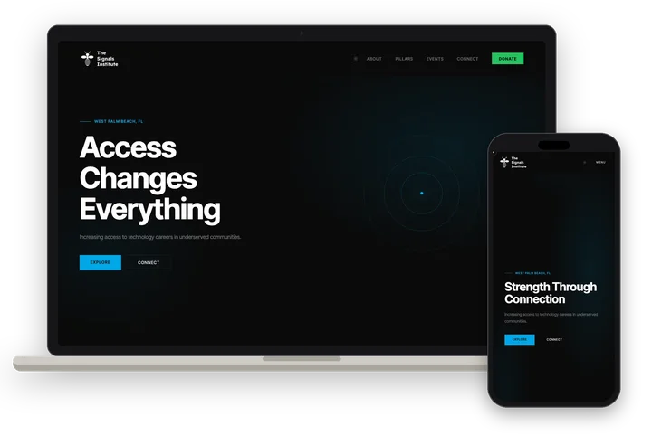

The Signals Institute
Identity · Website
Building long-term pathways into advanced technology, engineering and scientific fields, based in West Palm Beach.
Visit ↗


About
The Signals Institute is building long-term pathways into advanced technology, engineering and scientific fields. Based in West Palm Beach, it works through youth engagement, veteran transition and community programs.
Its approach rests on three pillars: engagement, exposure and transition. The Institute plans to build consistent relationships within schools, community organizations and faith-based networks, introduce participants to new fields and mentors, and support real transitions into advanced training and careers.
The name comes from its founding idea: signals are indicators of change, need and opportunity. The Institute is looking to partner with libraries, schools, community centers and city facilities that can host its programs.
Butts Studios designed the identity and the website.
Details
- What we made
- Identity · Website
- Palette
-
- #0A0A0A
- #00A8E8
- #22C55E
- #F59E0B
- #F5F3EE
- Type
- Inter Tight for headlines and reading; Source Serif 4 as the accent face.
- System
- Numbered navigation, small uppercase section labels, and three pillars each keyed to its own colour.
- Captured
- October 2026
Gallery
7 images. Tap any one to see it full size.